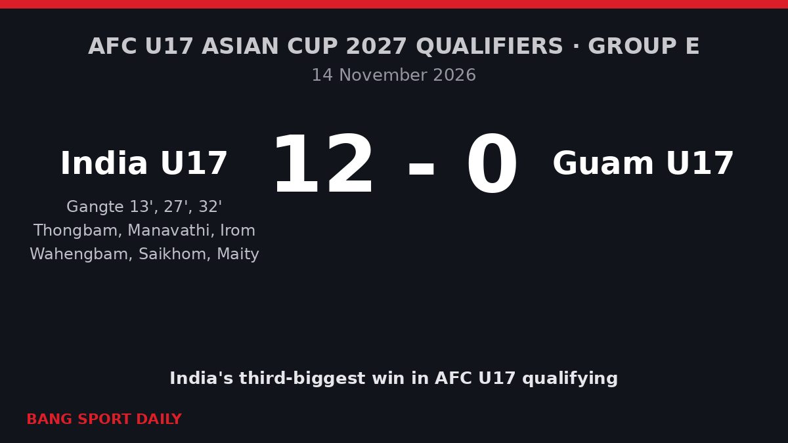

India U17 Beat Guam 12-0 to Go Top of Their Asian Cup Qualifying Group
Captain Dallalmuon Gangte scored a first-half hat-trick in Kuala Lumpur; India now meet Palestine, who also have six points.

What happened
India's under-17 team beat Guam 12-0 at the Kuala Lumpur Football Stadium on Saturday 14 November 2026, their second win in Group E of qualifying for the 2027 AFC U17 Asian Cup. India led 5-0 at half-time.
Leo Thongbam opened the scoring in the first five minutes. Captain Dallalmuon Gangte then scored in the 13th, 27th and 32nd minutes, with Hrishikesh Manavathi adding a goal in the 20th. Gangte, who also scored a hat-trick in the 4-2 win over Singapore on 11 November, was rested at half-time.

Seven more goals followed after the break, from David Mangang Irom, Raj Singh Wahengbam, Felix Meitei Saikhom and Ristik Maity. The reports differ on one of them: the AFC credits Irom with two goals and Wahengbam with a hat-trick, while the PTI news agency and Khel Now credit Wahengbam with four goals and Irom with one.
Why it matters
Only the winner of the five-team group qualifies for the finals. After Saturday's matches India and Palestine both have six points, and PTI reported that India are top on goal difference. In the day's other game, hosts Malaysia beat Singapore 2-1, the AFC reported. Guam have lost all three of their matches.
According to PTI, the result is India's third-biggest win in an AFC under-17 qualifying match, behind the 13-0 wins over Macau in 1984 and Brunei Darussalam in 2024. India are coached by Mehrajuddin Wadoo.

Key facts
- Score: India 12-0 Guam (half-time 5-0).
- First-half scorers: Thongbam, Gangte 13', 27', 32', Manavathi 20'.
- Second-half scorers: Irom, Wahengbam, Saikhom, Maity.
- Group E: India 6 points, Palestine 6.
- Venue: Kuala Lumpur Football Stadium, Malaysia.
What happens next
India play Palestine on Tuesday 17 November in a match between the group's two unbeaten teams.